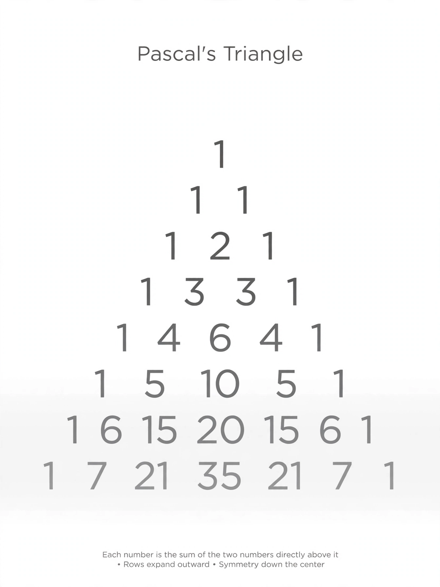

Binomial coefficient

[Image: Pascal's triangle of numbers fading down the page]
In mathematics, the binomial coefficients are the numbers that appear as coefficients in the expansion of a power of a binomial — the 1, 3, 3, 1 in (x + y)³. The coefficient 'n choose k', written with n over k in parentheses, counts how many ways k objects can be chosen from n: it equals n!/(k!(n−k)!).
Arranged in Pascal's triangle, each coefficient is the sum of the two above it — a pattern known in China, India and Persia centuries before Pascal's 1654 treatise.
Uses
Binomial coefficients are the probabilities at the heart of the binomial distribution, the entries of combinatorial identities used across algebra, and the counts behind combinations in lotteries and card hands.
They grow quickly — the central coefficients reach into the trillions by n = 40 — yet their arithmetic properties (for instance, a prime p divides every interior coefficient of row p) keep them central to number theory.